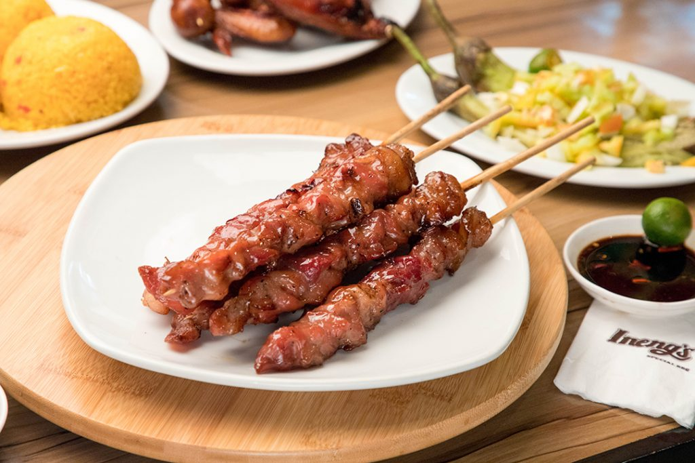
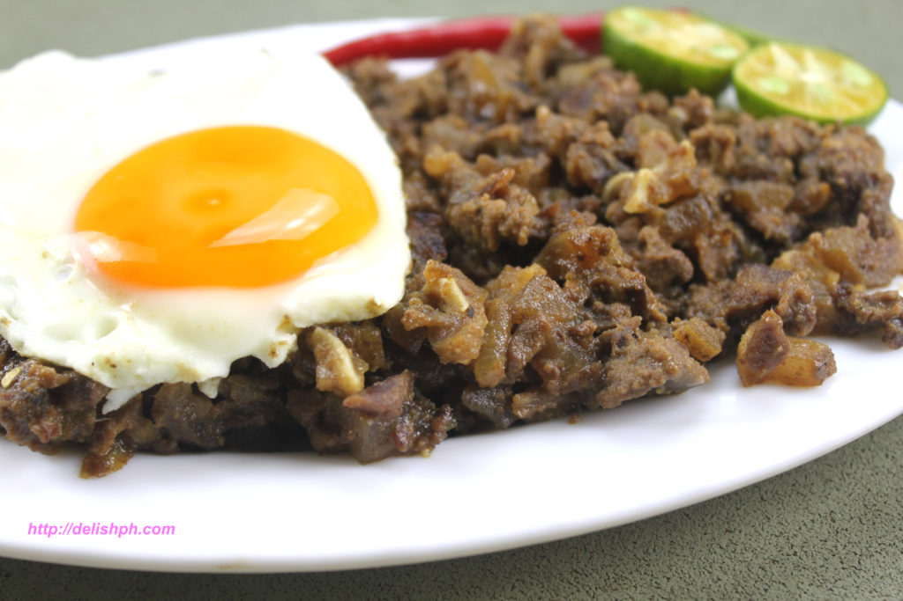
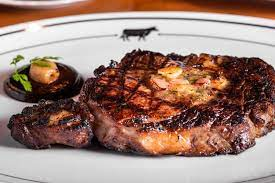
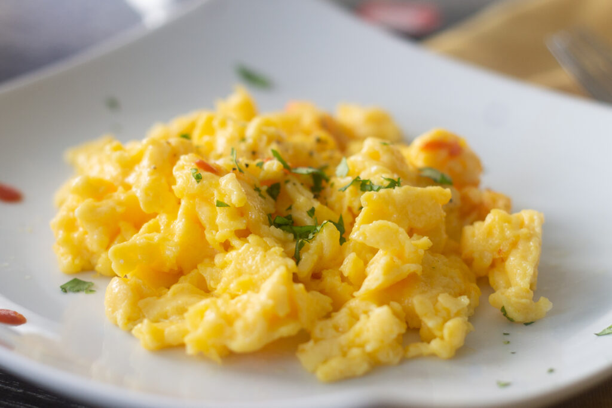
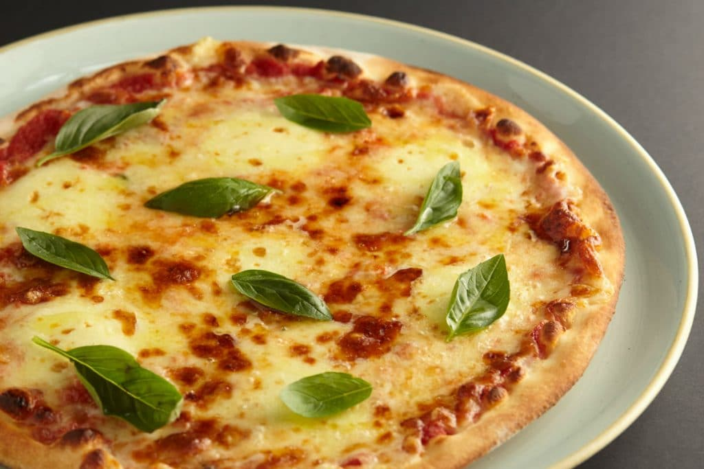

My Top 10 Favorite Foods
Top 1
 |
Hamburger
is a food consisting of fillings —usually a patty of ground meat,
typically beef—placed inside a sliced bun or bread roll.
Top 2
 |
Beef pares
or pares as it is commonly known, is a meal that consist of beef asado (beef stewed in a sweet-soy sauce),
garlic fried rice and a bowl of beef broth soup.
Top 3
 |
Kare Kare
is a Philippine stew that features a thick savory peanut sauce. It is generally made from a base of stewed oxtail,
beef tripe, pork hocks, calves feet, pig's feet or trotters,
various cuts of pork, beef stew meat, and occasionally offal.
Top 4
|  |
Pork BBQ
It is composed of thinly sliced pork pieces that are marinated in a special mixture of seasonings and spices.
It is normally grilled over wood charcoal and dipped in a tall jar of spicy vinegar before eating.
Top 5
 |
Orange chicken
is crispy cooked in a sweet and little spicy orange sauce.
The sweetness of orange chicken was introduced to cater to American tastes.
Top 6
 |
Pork tocino
Tocino is a cured meat product native to the Philippines. It is sometimes referred to as sweet red pork.
The curing preparation for this pork dish is similar to that of ham and bacon,
Top 7
|  |
Pork sisig
is a Filipino dish made from parts of a pig's face and belly,
and chicken liver which is usually seasoned with calamansi, onions, and chili peppers.
Top 8
|  |
Steak
A steak is a meat generally sliced across the muscle fibers,
It is normally grilled, though it can also be pan-fried. Steak can also be cooked in sauce,
such as in steak and kidney pie, or minced and formed into patties, such as hamburgers.
Top 9
|  |
Scrambled eggs
Scrambled eggs are a dish made from eggs (usually chicken eggs) stirred,
whipped or beaten together while being gently heated, typically with salt, butter, oil and sometimes other ingredients
Top 10
|  |
Pizza
a dish made typically of flattened bread dough spread with a savory mixture usually
including tomatoes and cheese and often other toppings and baked.